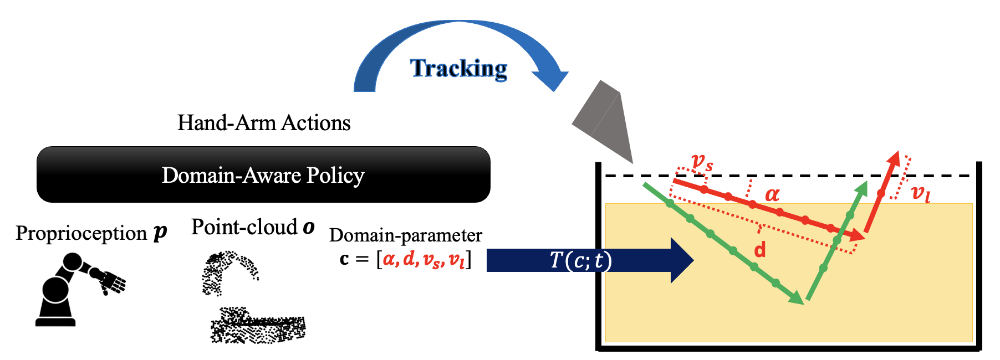
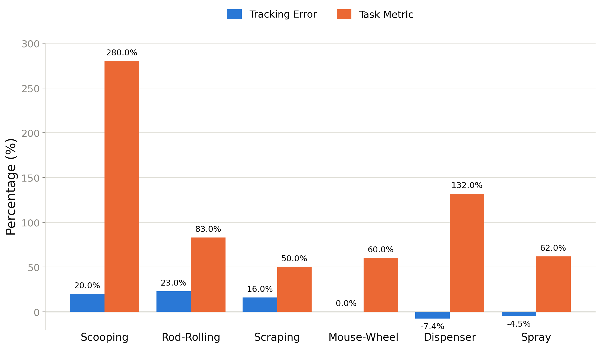
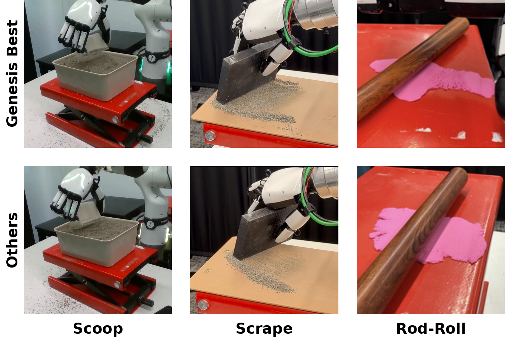

Sim-to-real RL has achieved impressive results in dexterous manipulation but remains limited to tasks with accurate rigid-body simulation. However, these methods cannot be applied to skills that involve deformable and particles, with which the simulation speed will become too slow for large-scale RL learning. We present DAPPT, a sim-to-real framework for end-to-end dexterous tool-use manipulation skills, e.g., sand scooping, play-dough rod-rolling, without simulating non-rigid materials. Our method learns a domain-aware RL policy by tracking procedural trajectories parameterized by domain parameters, and distills it into an end-to-end domain-aware sensorimotor policy. Furthermore, explicit domain representation enables fast selection of domain parameters that can maximize downstream task performance. We evaluate DAPPT end-to-end on six dexterous manipulation tasks, including sand scooping, play-dough rod-rolling, sand scraping, mouse-wheel scrolling, dispenser pressing, and spray triggering. Our method achieves 1.5-3.8× in task metrics through the best domain parameter and transfers zero-shot to the real world.
We simulate only the rigid tool and train the robot to track procedural trajectories T(c;t) generated from domain parameters c (for scooping: insertion angle, depth, and speeds). The policy π(p;o;c) takes c as input, so one policy covers many behaviors.
After training, a quick search over c (domain identification) picks the setting that maximizes the real task metric, e.g. grams of sand scooped.

Trained in rigid-body IsaacLab, evaluated in Genesis with MPM sand and dough. Genesis Avg: mean over sampled domain parameters. Genesis Best: the best one.
SimToolReal (Kedia et al., 2026) tracks GPT-6-generated 6D pose references using ground-truth poses; ours is end-to-end from vision.
| Scrape ↓ | Rod-Roll | Scoop | Mouse-Wheel | Dispenser | Spray | |
|---|---|---|---|---|---|---|
| Genesis Best (ours) | 17% | 2.85 cm | 13.9 g | 0.37 rad | #2.26k | #9.12k |
| SimToolReal | 95% | 0 cm | 9.2 g | 0.19 rad | #0 | #0 |

A policy trained only on the fixed Genesis Best trajectory loses roughly half or more of the task performance.
| Mouse-Wheel | Dispenser | Scoop | |
|---|---|---|---|
| Domain-Aware (ours) | 0.37 rad | #2.26k | 13.9 g |
| Fixed-Domain | 0.19 rad | #0.96k | 0.32 g |
| Performance drop | 48.6% | 57.5% | 97.7% |
Zero-shot on XHand1 + Franka with one depth camera, using Genesis Best, 20 trials per task. Task metric is averaged over task-success trials.
Use the scoop to lift as much sand as possible from the container. Task metric: sand weight in the scoop.
Roll the rod over the play-dough. Task metric: distance the play-dough is rolled over.
Scrape a pile of sand off the table with the scraper. Task metric: proportion of sand left unscraped (lower is better).
Scroll a mouse's wheel as far as possible with a single swing of a finger — challenging due to the wheel's small size and noisy depth readings. Task metric: angle the wheel scrolls.
Press the dispenser head down. Task metric (sim): amount of water emitted.
Grasp and lift the spray bottle, then press the trigger. Task metric (sim): amount of water emitted from the spray head.

Because domain parameters have direct physical meaning, their effect on behavior is interpretable in the real world too: